library(tidyverse)
library(rstatix)
# These packages will be used for evaluating the models we fit to our simulated data
library(performance)
library(ggResidpanel)
# This package is optional/will only be used for later sections in this chapter
library(MASS)10 Simulating Datasets
This section of the course teaches you how to simulate simple biological datasets, including categorical predictors, and continuous predictors and interaction effects. The materials then briefly introduce how this method can be used to help design experiments.
Currently, this chapter is written only in R. Python code will be added at a later date.
10.1 Libraries and functions
Click to expand
10.1.1 Libraries
10.2 Drawing samples from distributions
The first thing we need to get comfortable with is random sampling, i.e., drawing a number of datapoints from an underlying distribution with known parameters.
(Remember that distributions have parameters that describe their characteristics/shape; when we calculate descriptive statistics in datasets, we are estimating those parameters.)
rnorm(n = 100, mean = 0, sd = 1) [1] 0.071374340 -0.326355950 -0.316272060 0.714762914 1.231117797
[6] 0.177889318 1.890878877 -0.444222309 0.999440811 1.325929186
[11] -1.594955236 -2.763780102 1.068719311 -2.013290802 -0.047840694
[16] 0.682022757 -1.562907002 0.889700764 -0.211819600 0.225171724
[21] 0.707758495 0.937594656 -0.259375196 1.541067189 -0.202421575
[26] -0.189609183 0.001489118 0.104905602 0.564455173 -0.056826022
[31] 0.298151885 0.659031358 0.744258318 -1.153980494 -0.159347585
[36] 0.109633598 -0.399605383 -0.247957402 0.573187133 -0.876074007
[41] -1.052777472 -0.425085299 0.154539092 0.537239238 -0.080133397
[46] 0.521204511 -0.564676474 -0.925795414 -0.969224973 -0.985596470
[51] -2.138170742 0.513790248 -1.434767684 -1.265311403 0.332237661
[56] -0.414106781 1.861226577 -0.138663930 1.153357684 0.698008599
[61] 1.264656392 -0.528106386 1.424556451 0.514379429 -0.054746768
[66] -0.565047287 -1.015994414 -1.145573974 1.673531210 0.676893653
[71] -0.531797383 1.195813627 1.085429174 -0.531826834 0.739816678
[76] -0.368723878 0.205830349 -0.735577755 0.271823276 0.751570361
[81] 0.559010273 0.081037327 1.395208492 -0.158576681 0.042000520
[86] 0.504998600 -1.848816264 0.860488034 -0.398646201 -0.387246596
[91] -1.524281990 -0.554137954 -0.078332202 1.196901350 -1.630853334
[96] -0.314530194 1.096844693 0.575956885 -0.777824015 -0.102299248This is the rnorm function. It takes three arguments. The first is the number of datapoints (n) that you’d like to draw. The second and third arguments are the two important parameters that describe the shape of the underlying distribution: the mean and the standard deviation.
Now, rather than just getting a string of numbers, let’s visualise the dataset we’ve sampled.
We’ll use the base R hist function for this to keep things simple:
rnorm(100, 0, 1) %>%
hist()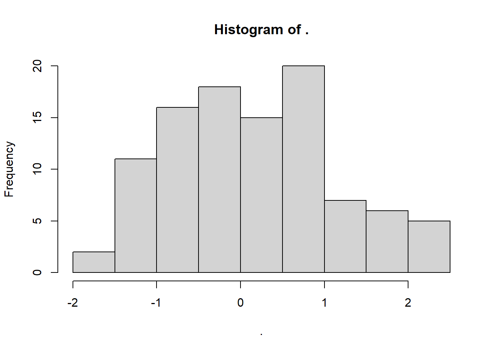
Rerun the last line of code multiple times. What happens?
Setting a seed
You may have noticed that when we repeat the above code over and over, we are sampling a different random subset of data points each time.
Sometimes, it’s useful for us to be able to sample the exact set of data points more than once, however.
To achieve this, we can use the set.seed function.
Run the following code several times in a row, and you’ll see the difference:
set.seed(20)
rnorm(100, 0, 1) %>%
hist()You can choose any number you like for the seed. All that matters is that you return to that same seed number, if you want to recreate that dataset.
10.2.1 Revisiting Shapiro-Wilk
To help link this sampling procedure back to some statistics that you might be familiar with, let’s use it to explore the Shapiro-Wilk test. It’s a null hypothesis significance test, used to help us decide whether a sample has been drawn from a normally-distributed underlying population.
set.seed(200)
rnorm(100, 0, 1) %>%
hist()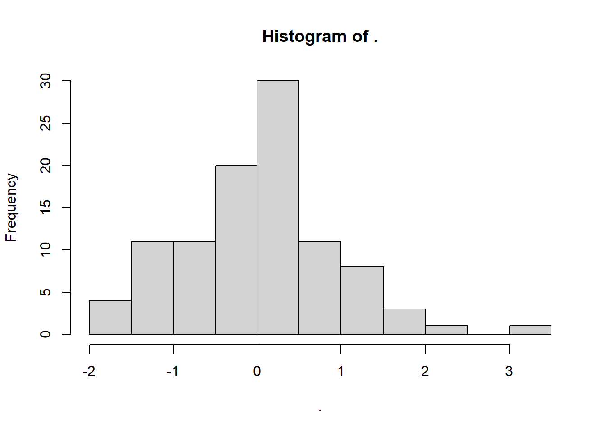
rnorm(100, 0, 1) %>%
shapiro.test()
Shapiro-Wilk normality test
data: .
W = 0.9907, p-value = 0.7208As expected, these data generate an insignificant Shapiro-Wilk test: we retain the null hypothesis, and infer that the data have come from a normal distribution. We know this is true, so we can confirm we have a true negative result.
However, let’s look at a different seed. Note that we’re keeping everything else identical about the code, including the underlying parameters/nature of the distribution.
set.seed(20)
rnorm(100, 0, 1) %>%
hist()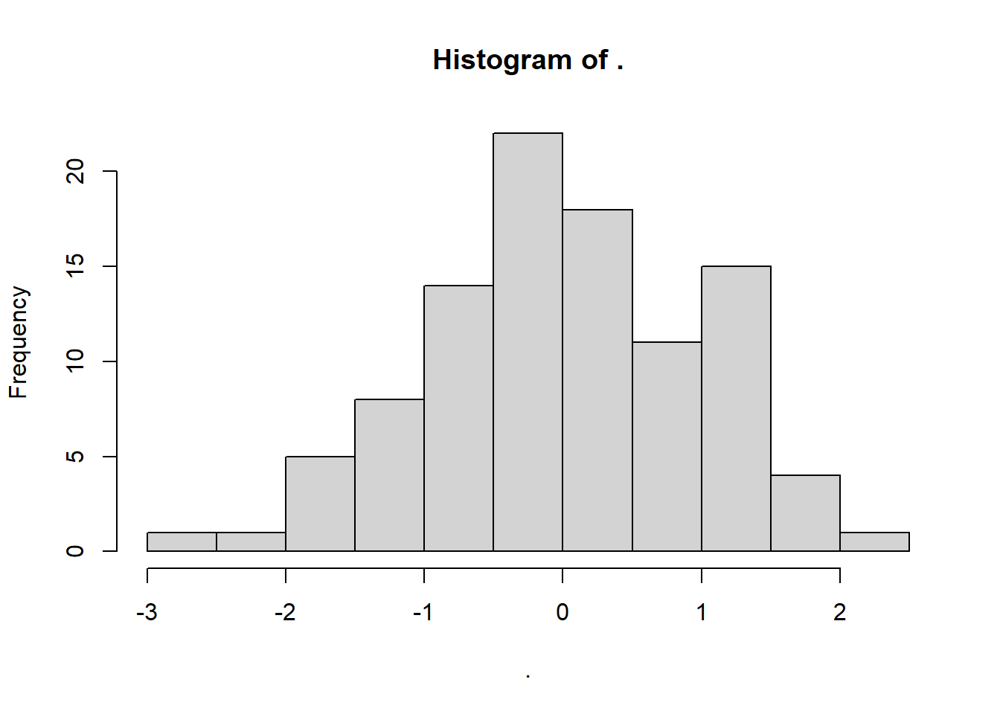
rnorm(100, 0, 1) %>%
shapiro.test()
Shapiro-Wilk normality test
data: .
W = 0.96715, p-value = 0.01343This test gives us a significant result - suggesting non-normality - even though we know full well that the underlying distribution is normal, because we made it so!
What’s happened? Well, this is a classic case of a false positive error: we reject the null hypothesis that the population is normal, even though it was actually true. We just got unlucky that the sample from seed 20 is behaving a bit unusually, so we make the wrong inference.
Let’s compare this to situations where we know that the null hypothesis is false, i.e., the underlying population isn’t normal.
This also gives us the chance to introduce the runif function, which works similarly to rnorm. It samples from a uniform distribution, with a specific minimum and maximum that we set as the parameters/arguments for the function:
set.seed(20)
runif(100, min = 0, max = 1) %>%
hist()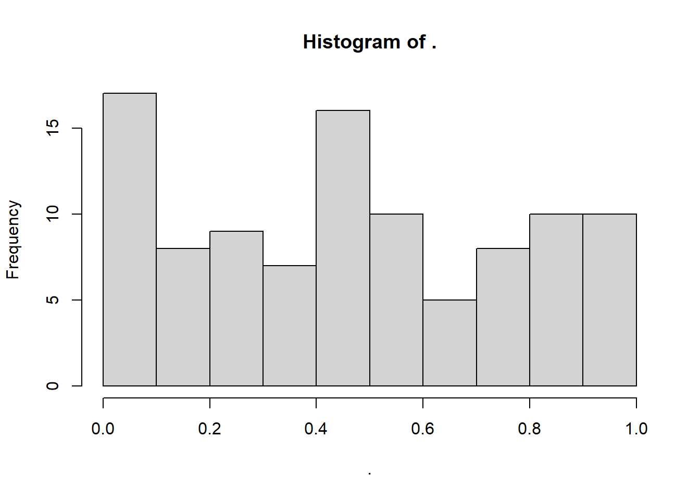
runif(100, 0, 1) %>%
shapiro.test()
Shapiro-Wilk normality test
data: .
W = 0.94018, p-value = 0.0001976As expected, we are told that these data are very unlikely to occur if the null hypothesis is true. This is a true positive result: we correctly infer that the underlying distribution is not normal.
But, just as we showed that the Shapiro-Wilk test can make a false positive error, it can also make a false negative error (missing a real result).
To force this to occur, we’re going to make the test deliberately under-powered, by drastically reducing the sample size:
set.seed(20)
runif(10, min = 0, max = 1) %>%
hist()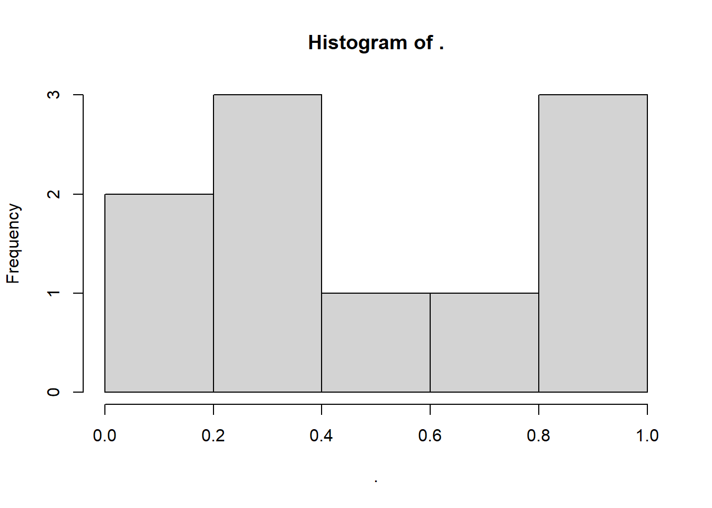
runif(10, 0, 1) %>%
shapiro.test()
Shapiro-Wilk normality test
data: .
W = 0.90646, p-value = 0.2576And there we have it - a false negative error! Even though the underlying population isn’t normal, the “signal” (the non-normality) isn’t strong enough to overcome the noisiness of a small dataset.
As an exercise, try creating normal QQ plots for each of these datasets, by using the base R qqnorm function, like so.
set.seed(20)
rnorm(100, 0, 1) %>%
qqnorm()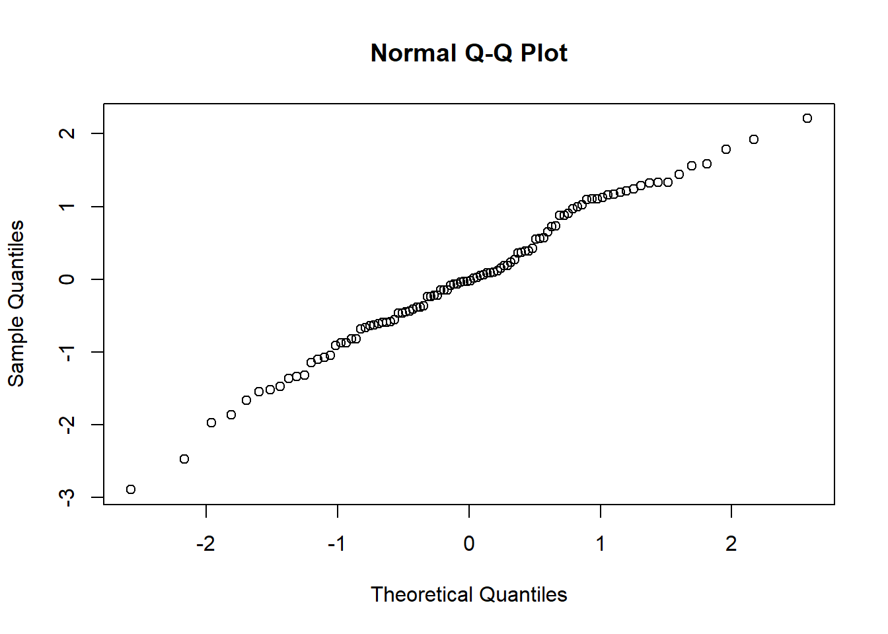
Compare these QQ plots with the Shapiro-Wilk test results. Do you think you would make different decisions using the two methods?
10.3 Simulating a continuous predictor
Now that the QQ plot propaganda is out of the way, let’s extend the simulations by making our dataset two-dimensional (rather than a single dimension/list of data points).
Specifically, let’s simulate a situation where one continuous variable predicts another. This is the situation that occurs in a simple linear regression.
To simulate this situation, and all the others below it in this chapter, we will start by setting a seed. We’ll also set a value of n straight away.
set.seed(20)
# sample size
n <- 60Now, we’re going to generate our predictor variable. There’s no noise or uncertainty in our predictor (remember that residuals are always in the y direction, not the x direction), so we can just produce the values by sampling from a distribution of our choice.
Depending on the nature of the variable we’re simulating, we might think that various different distributions are more appropriate or representative.
For the example here, we’re going to simulate a dataset about golden toads, an extinct species of amphibians.
Here’s what they looked like - pretty fancy guys, no?
Our response variable will be the clutch size (number of eggs).
One of the things that can cause variation in clutch size is the size of the toad herself, so we’ll use that as our continuous predictor, and we’ll sample it from a normal distribution.
Google tells us that the average female golden toad was somewhere in the region of 42-56mm long, so we’ll use that as a sensible basis for our normal distribution for our predictor variable length.
length <- rnorm(n, 48, 3)Now, we need to simulate our response variable, clutchsize.
We’re going to do this by setting up the linear model. We’ll specify a y-intercept for clutchsize, plus a gradient that captures how much clutchsize changes as length changes.
b0 <- 175
b1 <- 2
sdi <- 20We’ve also added an sdi parameter. This captures the standard deviation around the model predictions that is due to other factors we’re not measuring. In other words, this will determine the size of our residuals.
Now, we can simulate our set of predicted values for clutchsize.
avg_clutch <- b0 + b1*lengthYou’ll notice we’ve just written out the equation of our model.
tibble(length, avg_clutch) %>%
ggplot(aes(x = length, y = avg_clutch)) +
geom_point()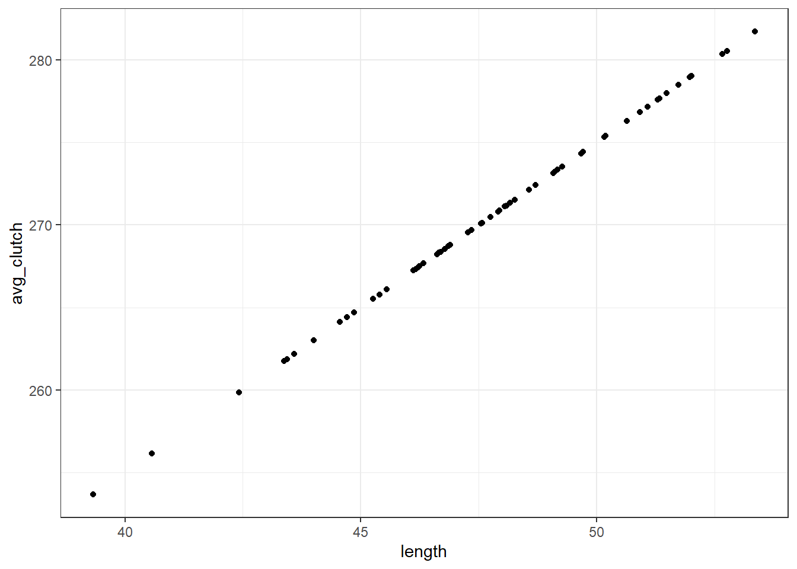
When we visualise length and avg_clutch together, you see they perfectly form a straight line. That’s because avg_clutch doesn’t contain the residuals - that comes next.
The final step is to simulate the actual values of clutch size.
We’ll use rnorm function again, and we put avg_clutch in as our mean. This is because the set of actual clutch size values should be normally distributed around our set of predictions - this is what we mean when we say that the residuals should be normally distributed!
clutchsize <- rnorm(n, avg_clutch, sdi)
goldentoad <- tibble(clutchsize, length)Then we use the tibble function to combine our response and predictor variables together into a dataset that we can explore.
10.3.1 Checking our dataset
Let’s make sure our dataset is behaving the way we intended.
First, we’ll visualise it:
ggplot(goldentoad, aes(x = length, y = clutchsize)) +
geom_point()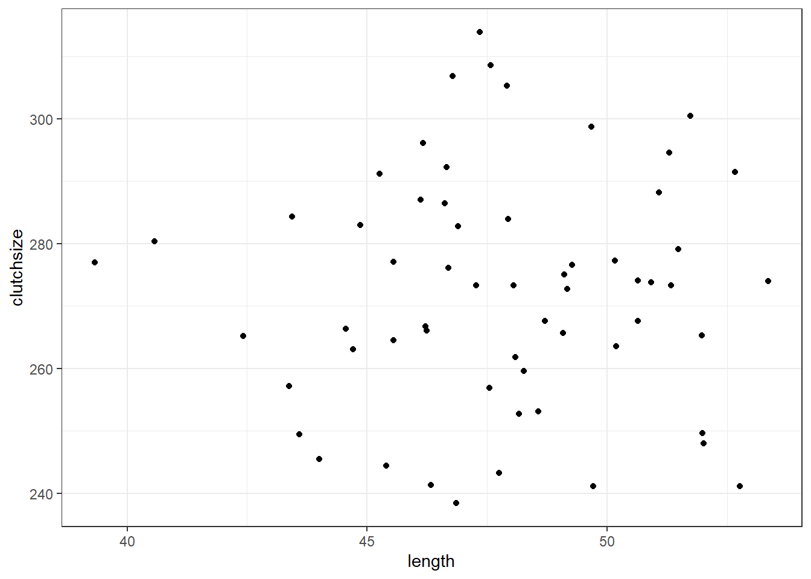
And then, we’ll construct a linear model - and check that our beta coefficients have been replicated to a sensible level of precision!
lm_golden <- lm(clutchsize ~ length, goldentoad)
summary(lm_golden)
Call:
lm(formula = clutchsize ~ length, data = goldentoad)
Residuals:
Min 1Q Median 3Q Max
-33.718 -10.973 1.094 11.941 41.690
Coefficients:
Estimate Std. Error t value Pr(>|t|)
(Intercept) 267.1395 38.4922 6.940 3.7e-09 ***
length 0.1065 0.8038 0.132 0.895
---
Signif. codes: 0 '***' 0.001 '**' 0.01 '*' 0.05 '.' 0.1 ' ' 1
Residual standard error: 18.76 on 58 degrees of freedom
Multiple R-squared: 0.0003025, Adjusted R-squared: -0.01693
F-statistic: 0.01755 on 1 and 58 DF, p-value: 0.8951Not bad at all. The linear model has managed to extract beta coefficients very close to the original b0 and b1 that we set.
If you’re looking to explore and understand this further, try exploring the following things in your simulation, and see how they affect the p-value and the precision of the beta estimates:
- Varying the sample size
- Varying the
sdi - Varying the
b1parameter
10.4 Simulating a categorical predictor
Categorical predictors are a tiny bit more complex to simulate, as the beta coefficients switch from being constants (gradients) to vectors (representing multiple means).
Let’s imagine that golden toads living in different ponds produce slightly different clutch sizes, and simulate some sensible data on that basis.
Before we do anything else, let’s clear our global environment so that nothing from our previous simulation has an unexpected impact on our new one:
rm(list=ls())Then, we’ll set up the parameters and predictor variables:
set.seed(20)
n <- 60
b0 <- 175
b1 <- 2
b2 <- c(0, 30, -10)
sdi <- 20
length <- rnorm(n, 48, 3)
pond <- rep(c("A", "B", "C"), each = n/3)We’ve set up a beta coefficient for our categorical predictor, which consists of three categories. The ponds have imaginatively been named A, B and C.
Note the use of the rep and c functions to generate our values for the categorical predictor - these functions are very much your friend in simulating datasets!
Once again, we simulate a set of predicted values using the model equation. We use the equation from above, but add our extra predictor/term.
avg_clutch <- b0 + b1*length + model.matrix(~0+pond) %*% b2Including a categorical predictor is a bit more complex. We use model.matrix(~0+pond) %*% b2 instead of simply multiplying our variable by a constant.
The model.matrix function produces a table of 0s and 1s - a matrix that represents the design of our experiment. Our b2 is also technically a matrix. Then, %*% syntax is the operator in R for matrix multiplication, to multiply these two things together.
You don’t really need to understand matrix multiplication to get used to this method. We’ll use this syntax a few more times in this chapter, so you’ll learn to recognise and repeat the pattern - that’s plenty!
Finally, as before, we now sample our actual values of clutchsize from a normal distribution with avg_clutch as the mean and with a standard deviation of sdi.
clutchsize <- rnorm(n, avg_clutch, sdi)
goldentoad <- tibble(clutchsize, length, pond)10.4.1 Check the dataset
Once again, we’ll visualise and model these data, to check that they look as we suspected they would.
lm_golden2 <- lm(clutchsize ~ length + pond, goldentoad)
summary(lm_golden2)
Call:
lm(formula = clutchsize ~ length + pond, data = goldentoad)
Residuals:
Min 1Q Median 3Q Max
-36.202 -11.751 -0.899 14.254 37.039
Coefficients:
Estimate Std. Error t value Pr(>|t|)
(Intercept) 262.8111 38.6877 6.793 7.6e-09 ***
length 0.1016 0.8108 0.125 0.901
pondB 39.2084 5.9116 6.632 1.4e-08 ***
pondC -5.5279 5.9691 -0.926 0.358
---
Signif. codes: 0 '***' 0.001 '**' 0.01 '*' 0.05 '.' 0.1 ' ' 1
Residual standard error: 18.69 on 56 degrees of freedom
Multiple R-squared: 0.5481, Adjusted R-squared: 0.5239
F-statistic: 22.64 on 3 and 56 DF, p-value: 9.96e-10ggplot(goldentoad, aes(x = length, y = clutchsize, colour = pond)) +
geom_point()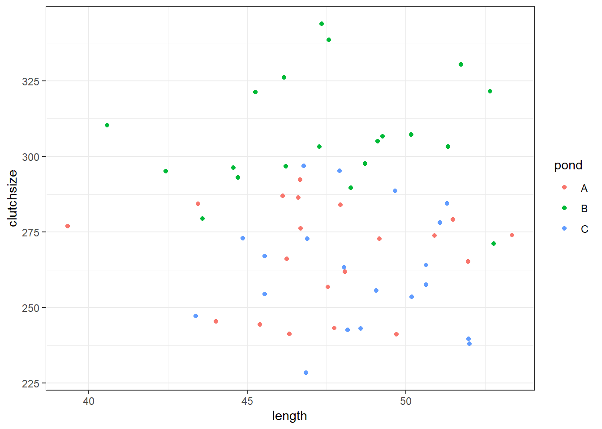
Has our model recreated “reality” very well? Would we draw the right conclusions from it?
Once again: explore what happens if you change different parameters in your model.
10.5 Simulating interactions
Now, let’s simulate an interaction effect length:pond.
Since at least one of the variables in our interaction is a categorical predictor, requiring a vector beta coefficient and the use of the model.matrix syntax, the interaction will be the same.
Think of it this way: our model with an interaction term will consist of three lines of best fit, each with a different intercept and gradient.
The difference in intercepts is captured by b2, and then the difference in gradients is captured by b3 that we set now:
rm(list=ls())
set.seed(20)
n <- 60
b0 <- 175
b1 <- 2
b2 <- c(0, 30, -10)
b3 <- c(0, 0.5, -0.2)
sdi <- 20
length <- rnorm(n, 48, 3)
pond <- rep(c("A", "B", "C"), each = n/3)And then we continue exactly as we did before. We don’t need to set up a new predictor, since we’re just using the two we were before.
avg_clutch <- b0 + b1*length + model.matrix(~0+pond) %*% b2 + model.matrix(~0+length:pond) %*% b3
clutchsize <- rnorm(n, avg_clutch, sdi)
goldentoad <- tibble(clutchsize, length, pond)10.5.1 Checking the dataset
ggplot(goldentoad, aes(x = length, y = clutchsize, colour = pond)) +
geom_point() +
geom_smooth(method = "lm", se = FALSE)`geom_smooth()` using formula = 'y ~ x'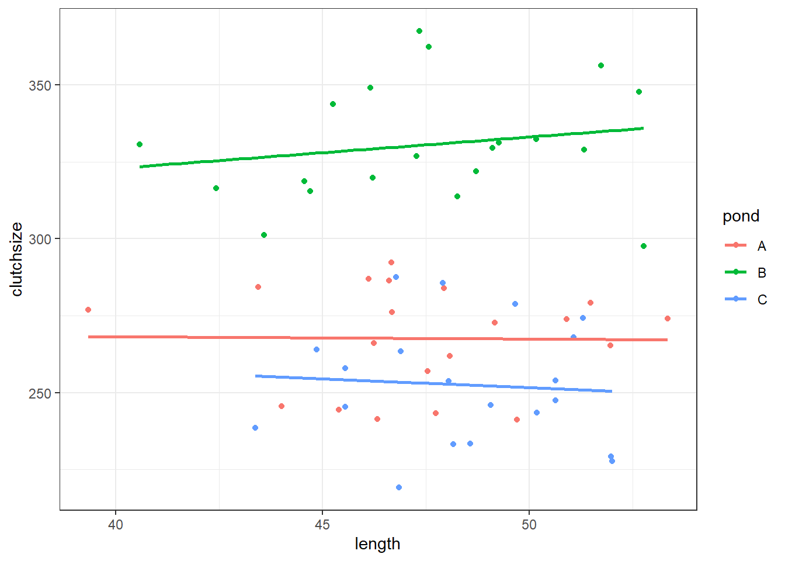
lm_golden3 <- lm(clutchsize ~ length*pond, goldentoad)
summary(lm_golden3)
Call:
lm(formula = clutchsize ~ length * pond, data = goldentoad)
Residuals:
Min 1Q Median 3Q Max
-38.409 -11.136 -1.377 12.863 37.095
Coefficients:
Estimate Std. Error t value Pr(>|t|)
(Intercept) 271.19106 64.37630 4.213 9.64e-05 ***
length -0.07503 1.35414 -0.055 0.956
pondB 11.00129 89.05626 0.124 0.902
pondC 8.73498 106.35392 0.082 0.935
length:pondB 1.09421 1.87219 0.584 0.561
length:pondC -0.49062 2.20866 -0.222 0.825
---
Signif. codes: 0 '***' 0.001 '**' 0.01 '*' 0.05 '.' 0.1 ' ' 1
Residual standard error: 19 on 54 degrees of freedom
Multiple R-squared: 0.7793, Adjusted R-squared: 0.7588
F-statistic: 38.13 on 5 and 54 DF, p-value: < 2.2e-1610.5.2 Exercise 1 - Including confounds
Level:
Often in research there are additional factors that vary during our experiment, which have an impact on our response variable and yet we are not actually interested in.
These are often referred to as confounding variables, and one of the methods of dealing with them (if you can’t control for them in your initial data collection) is to include them as covariates of no interest in your model.
Modelling confounds, or covariates of no interest, is as simple as just including them as predictors and then ignoring them in your interpretation (with the caveat that if the covariate has a meaningful interaction with a predictor of interest, you will need to mention it in the interpretation after all!)
This means that simulating covariates of no interest is just as easy as simulating any other predictor variable.
Add a froggy confound!
To practise what you’ve seen above:
- Add one or more covariates to your simulation. Start by including it as a main effect, with no interactions. You can choose whether you’d like them to be categorical or continuous - it makes no difference!
- Then, simulate a version of the dataset where your covariate of choice has an interaction with one of the predictors we do care about.
- Fit a model to this new version of the dataset. Deliberately exclude the interaction term from that model.
Note how this impairs your ability to access the true relationship between your predictors and your response.
This is why it’s so important to consider interactions!
10.6 Power analysis
Thus far, we’ve used simulation as a way of better understanding how linear models work. This has a few useful applications in real research:
- It lets you “imagine” your data more clearly…
- … which, in turn, may help you identify flaws in your experimental design
- You can test out your analysis pipelines (e.g., scripts) on simulated data, for debugging purposes
Another, very meaningful application of data simulation is constructing your very own power analysis. The idea is that you can simulate many datasets from the same model (instead of just one, as we’ve been doing), fit the model to each of them, and then look across the entire set to see how it performs across the board.
Let’s try that.
We’ll use the simple linear regression example from above, to keep things as transparent as possible.
We’ll extract the overall F-statistic and p-value, and also the R2 value, just as an example. You could use this code as a template to also extract the beta coefficients, or individual p-values for multiple predictors (i.e., the output of an anova function).
rm(list=ls())
set.seed(20)
# As always, set the parameters that won't change
n <- 60
b0 <- 175
b1 <- 2
sdi <- 20Now, we use a for loop to simulate 1000 datasets, and save their p-values in a list object.
# First, we have to initialise the matrix that we plan to store our info in
toad_sim_results <- data.frame(matrix(ncol=3,nrow=1000, dimnames=list(NULL, c("f", "p", "rsquared"))))
for(i in 1:1000) {
length <- rnorm(n, 48, 3)
avg_clutch <- b0 + b1*length
clutchsize <- rnorm(n, avg_clutch, sdi)
goldentoad <- tibble(length, clutchsize)
lm_toad <- lm(clutchsize ~ length)
f <- summary(lm_toad)$fstatistic
toad_sim_results$f[i] <- f[1]
toad_sim_results$p[i] <- pf(f[1],f[2],f[3],lower.tail=F)
toad_sim_results$rsquared[i] <- summary(lm_toad)$r.squared
}Now, we can look at the overall distribution of these different values.
Let’s start by looking at the test statistics.
plot(toad_sim_results$f)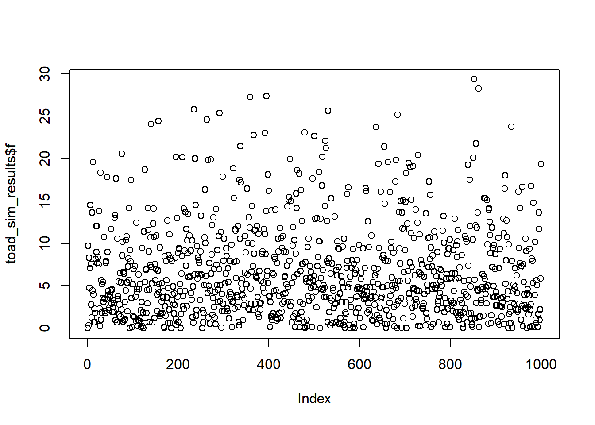
hist(toad_sim_results$f)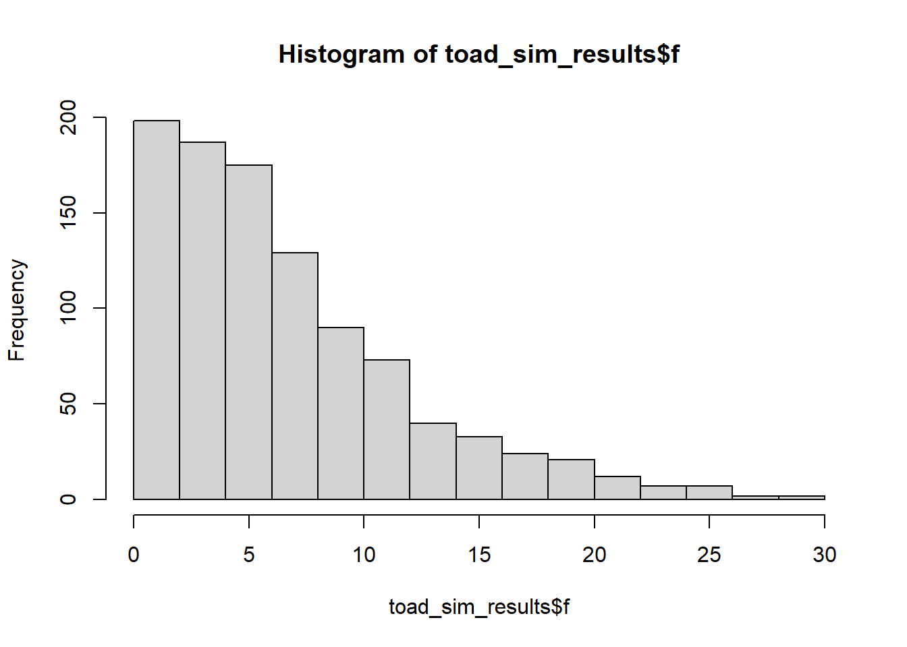
Remember: each of these F-statistics is acting as a “summary” for a single dataset, of pertinent information about those data (in this case, the signal-to-noise ratio). Since each of our samples is unique, although drawn from the same underlying distribution, we also expect them to have different F-statistics.
(Reassuringly, our 1000 F-statistics seem to follow an F-distribution - this makes sense!)
The interesting part for a power analysis, however, is figuring out what proportion of these F-statistics have associated p-values under our significance threshold.
Let’s assume that we’re using a significance threshold of 0.05.
mean(toad_sim_results$p < 0.05, na.rm = TRUE)[1] 0.61564% of our results are significant. Specifically, 64% of our tests give significant results, in a situation where the null hypothesis is false (i.e., there is a real result). These represent our true positives.
The “true positive” rate is our statistical power. With a given effect size and sample size - which we set up by choosing n, sdi and the beta coefficients - we find that this model has 64% power.
We have performed an a posteriori power analysis.
Let’s compare this to a traditional power analysis, using a couple of specific datasets simulated under different seeds, but using the same parameters.
rm(list=ls())
set.seed(21)
n <- 60
b0 <- 175
b1 <- 2
sdi <- 20
length <- rnorm(n, 48, 3)
avg_clutch <- b0 + b1*length
clutchsize <- rnorm(n, avg_clutch, sdi)
goldentoad <- tibble(length, clutchsize)
lm_toad <- lm(clutchsize ~ length)
u <- summary(lm_toad)$f[2]
v <- summary(lm_toad)$f[3]
f2 <- summary(lm_toad)$r.squared/(1-summary(lm_toad)$r.squared)
pwr.f2.test(u, v, f2, sig.level=0.05)
Multiple regression power calculation
u = 1
v = 58
f2 = 0.3092493
sig.level = 0.05
power = 0.9885543rm(list=ls())
set.seed(23)
n <- 60
b0 <- 175
b1 <- 2
sdi <- 20
length <- rnorm(n, 48, 3)
avg_clutch <- b0 + b1*length
clutchsize <- rnorm(n, avg_clutch, sdi)
goldentoad <- tibble(length, clutchsize)
lm_toad <- lm(clutchsize ~ length)
u <- summary(lm_toad)$f[2]
v <- summary(lm_toad)$f[3]
f2 <- summary(lm_toad)$r.squared/(1-summary(lm_toad)$r.squared)
pwr.f2.test(u, v, f2, sig.level=0.05)
Multiple regression power calculation
u = 1
v = 58
f2 = 0.03516689
sig.level = 0.05
power = 0.297925These two seeds (chosen specifically to illustrate the point) give wildly different estimates of the statistical power. This is because they also have wildly different R2 values in the model summaries.
Given what you know, from the content in this chapter, do you trust the results from either of these single datasets more or less than you trust the results from 1000 datasets combined?
10.6.1 Exercise 2 - Changing power
Level:
Return to the for loop that we used to generate our 1000 datasets, and change some of the parameters.
- How does increasing or decreasing
nimpact power? - How does changing the beta coefficients impact power?
- What about changing
sdi?
Look at the impact that each of these things has on the set of statistics, p-values, and R2 values that you get.
10.6.2 Exercise 3 - A priori power analysis
Level:
Perhaps the more useful application of power analysis is figuring out how big your sample size needs to be.
For those who feel more comfortable with the programming, try running simulations where you vary n over a range, and look at the impact. (Keep all the other parameters constant, unless you’re really looking for a challenge.)
See if you can find a sensible cut-off for n where 80% power is achieved.
10.7 Summary
Key Points
- Datasets can be simulated, by setting up the underlying distribution and sampling randomly from it
- You can sample from different types of distributions, with varying parameters
- These simulated datasets can be used for checking your experimental design, and/or testing your analysis pipeline
- Simulations can also be used to perform power analyses